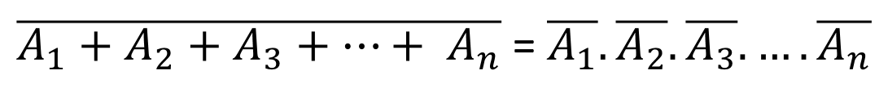
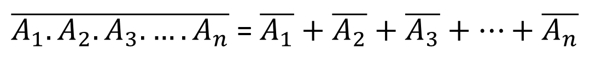

গণিত ও যুক্তির মধ্যে যোগসূত্র স্থাপন করে যে অ্যালজেবরা তাকে বুলিয়ান অ্যালজেবরা বলে।বুলিয়ান অ্যালজেবরা মূলত লজিকের সত্য ও মিথ্যা এ দুইটি স্তরের উপর ভিত্তি করে তৈরী করা হয়েছে৷সত্য ও মিথ্যাকে বাইনারি ১ এবং ০ দ্বারা পরিবর্তন করে সমস্ত গাণিতিক সমস্যা বুলিয়ান অ্যালজেবরার সাহায্যে করা সম্ভব হয়৷কম্পিউটারে ০ ভোল্ট থেকে ভোল্ট পর্যন্ত ০ এবং ১ ভোল্ট থেকে ৫ ভোল্ট পর্যন্ত ১ ধরা হয়।
বুলিয়ান বীজগণিতে তিনটি মৌলিক ক্রিয়া আছে ৷ যথা:
১৷ বুলিয়ান যোগের ক্রিয়া (Logical OR Operation)
২৷ বুলিয়ান গুনের ক্রিয়া (Logical AND Operation)
৩৷ বুলিয়ান পূরকের ক্রিয়া (Logical NOT Operation)
এ তিনটি মৌলিক ক্রিয়ার জন্য OR,AND,NOT এই তিন ধরণের লজিক বর্তনী ব্যবহার করা হয়।
বুলিয়ান অ্যালজেবরার বৈশিষ্ট্যঃ
১।বুলিয়ান অ্যালজেবরায় শুধুমাত্র ০ ও১ এই ২ টি মাত্র অঙ্ক ব্যবহৃত হয়।
২।এ অ্যালজেবরায় শুধুমাত্র যোগ ও গুণের সমস্ত গাণিতিক কাজ করা হয়৷
৩।এতে কোন ধরণের ভগ্নাংশ,লগারিদম,বর্গ,ঋণাত্মক সংখ্যা,কাল্পনিক সংখ্যা ইত্যাদি ব্যবহার করা যায় না৷
৪।এতে কোন জ্যামিতিক ও ত্রিকোণমিতিক সূত্র ব্যবহার করা যায় না৷
৫।এ অ্যালজেবরা দশমিক অ্যালজেবরার তুলনায় অনেক সহজ পদ্ধতি।
বুলিয়ান ধ্রুবক ও চলক
সাধারণত ধ্রুবক বলতে কোন গাণিতিক প্রকিয়ায় ব্যবহৃত বিভিন্ন রাশির মান অপরিবরর্তীত থাকাকে বুঝায় এবং চলক বলতে সর্বদা পরিবর্তনশীল রাশিকে বুঝায়।বুলিয়ান অ্যালজেবরায় ব্যবহৃত কোন রাশির মান যদি শুধুমাত্র ০ বা ১ নির্দেশ করে তবে তাকে বুলিয়ান ধ্রুবক বলে।অপরপক্ষে রাশিটির মান যদি ২টি ভিন্ন অবস্থা (০ ও১)নির্দেশ করে তবে তাকে বুলিয়ান চলক বলে।
বুলিয়ান স্বতঃসিদ্ধঃ
বুলিয়ান অ্যালজেবরা শুধুমাত্র যৌক্তিক যোগ ওযৌক্তিক গুণের নিয়মগুলোকে বুলিয়ান স্বতঃসিদ্ধ বলে৷
বুলিয়ান স্বতঃসিদ্ধঃ ২ প্রকার।যথাঃ
১৷যোগের বুলিয়ান স্বতঃসিদ্ধ
২৷গুনের বুলিয়ান স্বতঃসিদ্ধ
যোগের বুলিয়ান স্বতঃসিদ্ধ
যোগের সময় বুলিয়ান অ্যালজেবরা যেসকল নিয়ম মেনে চলে তাকেযোগের বুলিয়ান স্বতঃসিদ্ধ বলে ৷যোগের ৪টি নিয়ম প্রচলিত৷যথাঃ
১।0+0=0
২।0+1=1
৩।1+0=1
৪।1+1=1
গুনের বুলিয়ান স্বতঃসিদ্ধ
গুনের সময় বুলিয়ান অ্যালজেবরা যে সকল নিয়ম মেনে চলে তাকেগুনের বুলিয়ান স্বতঃসিদ্ধ বলে ৷গুনের ৪টি নিয়ম প্রচলিত ৷ যথাঃ
১।0.0=0
২।0.1=0
৩।1.0=0
৪।1.1=1
বুলিয়ান পূরক বুলিয়ান অ্যালজেবরায় যে কোন চলকের মান ০ অথবা ১ হয়৷এ ০ অথবা ১ কে একটি অপরটির বুলিয়ান পূরক বল।
বুলিয়ান পূরক (Boolean Complement)
বুলিয় বীজগণিতে চলকের দু’টি সম্ভাব্য মান ০ এবং ১ -কে একটিকে অপরটির পূরক বলা হয়। অর্থাৎ ১-এর পূরক ০ এবং ০-এর পূরক ১।
বুলিয়ান দ্বৈত নীতি
বুলিয়ান অ্যালজেবরায় ব্যবহৃত সকল উপপাদ্য বা সমীকরণ যে দুটি নিয়ম মেনে একটি বৈধ সমীকরণ থেকে আর একটি বৈধ সমীকরণ নির্ণয় করে তাকে বুলিয়ান দ্বৈত নীতি বলে।
নিয়ম ২টি হলো -
১।০ ও ১ পরস্পর বিনিময় করে৷
২৷ অর(+) এবং অ্যান্ড(.) পরস্পর বিনিময় করে।
বুলিয়ান উপপাদ্য
বুলিয়ান উপপাদ্য এর সাহায্যে যুক্তি ও রাশিমালার সরলীকরণ করা যায়।
মৌলিক উপপাদ্য
1.A+0=A
2.A+1=1
3.A+A=A
4.A+A'=1
5.A.0=0
6.A.1=A
7.A.A=A
8.A.A'=0
সহায়ক উপপাদ্য
1.A+A.B=A
2.A''=A
বিভাজন উপপাদ্য
1.A(B+C)=A.B+A.C
2.A+B.C=(A+B).(A+C)
3.A+A'B=A+B
4.A.B+B.C'+BC=A.B+C
বিনিময় উপপাদ্য
1.A+B=B+A
2.A.B=B.A
ডি-মরগ্যান উপপাদ্য
1.(A+B)'=A'.B'
2.(A.B)'=A'+B'
অনুষঙ্গ উপপাদ্য
1.A+(B+C)=(A+B)+C
2..A.(B.C)=(A.B).C
ডি-মরগ্যানের উপপাদ্য
ফরাসি গণিতবিদ ডি-মরগ্যান, বুলিয়ান ফাংশন সরলীকরণ করার জন্য দুটি সূত্র আবিষ্কার করেন।
প্রথম উপপাদ্যঃ যেকোন সংখ্যক চলকের যৌক্তিক যোগের কমপ্লিমেন্ট প্রত্যেক চলকের কমপ্লিমেন্টের যৌক্তিক গুণের সমান। n সংখ্যক চলকের জন্য প্রথম উপপাদ্য-

দ্বিতীয় উপপাদ্যঃ যেকোন সংখ্যক চলকের যৌক্তিক গুণের কমপ্লিমেন্ট প্রত্যেক চলকের কমপ্লিমেন্টের যৌক্তিক যোগের সমান। n সংখ্যক চলকের জন্য দ্বিতীয় উপপাদ্য –
